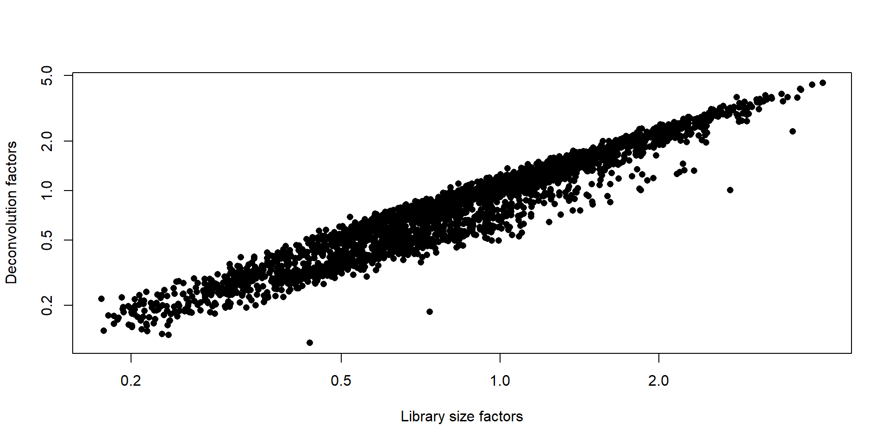
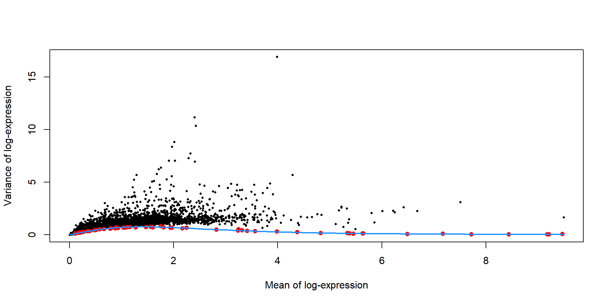
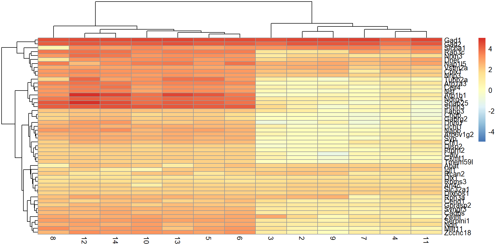

RNA-seq analysis with simpleSingleCell from Bioconductor
2026-05-04
Overview
This workflow demonstrates a complete single-cell RNA-seq (scRNA-seq) analysis pipeline to Identify distinct brain cell populations (e.g., interneurons) from heterogeneous data.
- Process raw single-cell gene expression data
- Remove low-quality cells
- Normalize technical variation
- Identify biologically meaningful variation
- Cluster cells into distinct populations
- Detect marker genes to assign cell types
Zeisel Mouse Brain Dataset
- ~3,000 single cells
- Tissue: Cortex & hippocampus
- Technology:
- Fluidigm C1 system
- Unique Molecular Identifiers (UMI)-based sequencing
Highly heterogeneous, which is ideal for clustering Well-annotated for easy biological validation
Data Loading & Cleaning
- Loaded dataset into
SingleCellExperiment
- Merged duplicate gene entries
- Fetch the Ensembl gene IDs
Quality Control
Remove low-quality cells QC metrics: Library size Detected genes Mitochondrial % ERCC %
QC Results: Low features: 3 cells High ERCC: 65 cells High mitochondrial: 128 cells Total removed: 189
TableGrob (2 x 2) "arrange": 4 grobs
z cells name grob
1 1 (1-1,1-1) arrange gtable[layout]
2 2 (1-1,2-2) arrange gtable[layout]
3 3 (2-2,1-1) arrange gtable[layout]
4 4 (2-2,2-2) arrange gtable[layout]
Normalization
Normalize for sequencing depth Use deconvolution size factors

Variance Modeling
Identify highly variable genes Separate biological vs technical variance

Figure 4: Per-gene variance as a function of the mean for the log-expression values in the Zeisel brain dataset. Each point represents a gene (black) with the mean-variance trend (blue) fitted to the spike-in transcripts (red).
Dimensionality Reduction
- PCA for denoising
- t-SNE for visualization
- number of PCs retained by
denoisePCA().
Clustering & t-SNE Visualization
- Each point = cell
- Color = cluster
- Graph-based clustering
- 14 clusters identified
1 2 3 4 5 6 7 8 9 10 11 12 13 14
283 451 114 143 599 167 191 128 350 70 199 58 39 24

Marker Detection
- Identify cluster-specific genes
- Compare each cluster vs others
Top markers for Cluster 1: * Gad1 * Gad2 * Slc32a1
Indicates interneurons
Marker Heatmap
- Visualize expression across clusters

Figure 6: Heatmap of the log-expression of the top markers for cluster 1 compared to each other cluster. Cells are ordered by cluster and the color is scaled to the log-expression of each gene in each cell.
LogFC Heatmap
- Compare marker strength across clusters

Summary
- Processed scRNA-seq dataset
- Identified 14 cell clusters
- Detected biologically meaningful markers
- Interneurons identified in Cluster 1
References
Pollen, A. A., T. J. Nowakowski, J. Shuga, X. Wang, A. A. Leyrat, J. H. Lui, N. Li, et al. 2014. “Low-coverage single-cell mRNA sequencing reveals cellular heterogeneity and activated signaling pathways in developing cerebral cortex.” Nat. Biotechnol. 32 (10): 1053–8.
Zeisel, A., A. B. Munoz-Manchado, S. Codeluppi, P. Lonnerberg, G. La Manno, A. Jureus, S. Marques, et al. 2015. “Brain structure. Cell types in the mouse cortex and hippocampus revealed by single-cell RNA-seq.” Science 347 (6226): 1138–42.
Zeng, H., E. H. Shen, J. G. Hohmann, S. W. Oh, A. Bernard, J. J. Royall, K. J. Glattfelder, et al. 2012. “Large-scale cellular-resolution gene profiling in human neocortex reveals species-specific molecular signatures.” Cell 149 (2): 483–96.